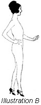
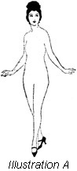
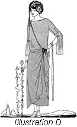
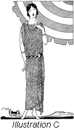
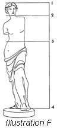
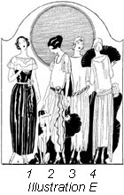
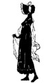

1926—The New-Way Course in Fashionable Clothes-Making
Introduction to Lesson 45
A Study of Dress Design
What is design? Does it mean merely the creating of a new style—the adding of a panel or a drape or a new kind of trimming? Does it mean merely something "different," something individual? No—design is something a great deal more intrinsic, a great deal more vital than all of these.
Have you ever seen a picture of the Cathedral of Milan with its slender spires reaching into heaven? Have you ever seen a picture of the famous Cathedral of Rheims—one of the world's miracles of beauty? In these two magnificent structures we see design in one of its most beautiful and powerful forms. Just as fashion determines the style of each season, so does fashion also decree the architecture of each generation. For it is fashion that dominates design—fashion that makes, shapes, models, adorns and adapts.
We know that it was fashion that decreed Gothic architecture of the Middle Ages. And fashion also determined the Doric, the Corinthian, the Roman forms of architecture. Fashion means form and design means form. We wear form, see form, our likes and dislikes are governed by form. Design models and adapts form in many new and interesting ways.
Dress, therefore, is only one of the forms in which fashion finds expression. There are countless creators of form, or design. The author with his pen, the painter with his brush, the sculptor with his chisel—the dressmaker with her shears and needles—all are creators of the beautiful, all are artists in design.
Dress Design
The woman who is ruled by fashion entirely is not a well-dressed woman. To worship at the pedestal of fashion, trembling to follow in haste each new style decree that is announced, is to dwarf one's originality and handicap one's sense of freedom. And freedom is the very essence of true design, of true style creating; the freedom to express oneself in line and color, to choose and make for ourselves apparel that is individual, attractive, suitable.
To be always well-dressed is one of the greatest assets a woman can have. And through the new principle of sewing and design, this is possible to the woman of limited means as well as to the woman who can spend a great deal of money on her clothes. By solving all the little intricacies of sewing, the NEW-WAY methods leave plenty of time for the woman in the home to devote to design—to the creating of fashion. While there are, of course, certain rules to which she must conform if she wishes to be modern in style, she may still be individual in her dress by developing silks and satins and the beautiful soft materials of today into artistic creations of her own conception.
We know that there are no two women made nearly alike enough to be equally well fitted by the same garment. This is true no matter what the prevailing fashion of dress may be. Therefore, the ready-made dress or skirt, cut for unknown and unseen figures, cannot be considered to always conform with the requirements either of design or good taste. Good taste in dress has frequently been compared to good taste in music—it must harmonize and mark the whole man or woman.
Fashion is full of whimsicalities. To express these whimsicalities in a manner harmonious to one's own personality is to master the principles of design.
Design as a Mean of Self-Expression
There is probably no more triumphant form of self-expression for woman than dress design. Always a lover of the beautiful and the becoming, she is able in the lines and colors of clothes to express her individual taste. She is able to enjoy a sense of freedom, to use the whole world as a source of design for her apparel.
If you were a student of architecture, you would find that the towering lines of a cathedral express a certain poetry. There is a poetry also in a well-moulded statue, in a beautiful painting. And this same poetry is to be found in the designing of beautiful clothes—a rhythmic beauty of line and meter such as one finds in an old Spanish song. Even the simple flowing robes of the early Grecians reveal this poetry of dress.
And it is because of this hidden poetry, because of the gratifying means of self-expression, that the study of design is so fascinating. To create clothes that are an artistic interpretation of oneself is to be conscious of all the triumphs a writer, or an artist, or an architect feels after creating a beautiful piece of work
In this introductory we are not going to study design. We are merely going to touch lightly on the rudiments and principles of design, so that when you do study this subject in Lesson 45 you will have a clear understanding of all its requirements. The following paragraphs are going to be devoted to a consideration of the human form in design, the importance of color, sources of design and other principles of importance—and interest. There will also be a valuable talk on the requirements of individual types in design, and of the part that ornament plays.
The human body is to the designer of clothes what the canvas is to the artist and the landscape to the architect. Let us then first make a brief survey of the general requirements of design, and then study the human form and its relation to design.
The Requirements of Design
In dress design we consider mass, line, color and detail, and how to analyze personality or individuality as applied to the wearer. Texture is also to be considered. Anyone can attain good taste, or a fine sense of the fitness of things (which is just another way of saying design) by studying the requirements of design.
Dress means as much to a person as a good speaking voice or a pleasing manner. And as one eminent authority has said "One's dress attracts or repels at all times. Its elegance depends upon two fundamental principles; the search for greater simplicity, and the search for detail and personality."
If more dressmakers knew and practiced the principles of design, we would not see so many unbecoming and inharmonious dresses. Even the woman who does not expect to make clothes for others should be able to design for her own form and coloring, and learn exactly what clothes are most becoming to her. If one achieves suitability, comfort, becomingness and good taste, one will be at all times well dressed.
Let us see exactly what the designing of a dress involves—exactly what we must take into consideration.
- The study of the structural lines of the human figure.
- The requirements of individual types. Suitability.
- The selection of materials, with reference to color, texture and weave.
- Detail—which is ornamentation and shaping, and an analysis of the laws of design embracing proportion, rhythm, harmony and the perfect balance of line, mass and color.
Of course, we must include in the list a study of the sources of design, but this is covered completely in the following lesson.
A Study of the Human Figure
To the artist, the human figure is the most beautiful in the world. The designer of clothes must take this attitude also, if she wishes her creations to be truly beautiful. There are no straight lines in the body. All are gently curved. And all parts of the body bear certain general relations to one another.
For the study of design, you must know the figure, its contour, its curves, its general outline. You must know the relation of the form to the gown you are draping—the form must be your background, your landscape, your canvas, your very foundation. An invariable rule of design is that all lines must closely follow the lines of the body.
Artistic design employs both straight and curved lines. Their arrangement determines the expression of the garment. Straight lines lend dignity; curved lines soften the contour and lend the charm of variety. Gowns designed for street wear and for party wear should have entirely different lines. For the street dress, dignity is desired and straight, severe lines should be used to express this dignity. For the evening gown one chooses soft, curved lines that express life, joy, pleasure.
In well-made, well-designed clothes no lines are in variation or contradiction to the contour of the form, whether made by seam or decoration, all divisions of the garment should be made in relation to the structural parts and areas. Decoration should always be placed at the points of support.
Certain general rules may be applied to the designing of clothes for the human figure. For instance, stripes, plaids, checks, spots and figures of any kind always draw attention to the dimensions. And, of course, the stout woman always looks larger if her surface is marked off into many spaces. Similarly, the thin woman appears thinner if her body is marked off into very few spaces.
The long, straight lines may be depended upon to lend dignity and severity to a garment. Curved lines may be depended upon to express joy and gladness. But straight or curved, the lines must harmonize with the lines of the body. The use of horizontal and vertical lines in combination rivets the attention; the flow of liens growing out of each other express unity.
We find, then, that the whole subject of design evolves into one fundamental principle; the arranging of lines and shapes to harmonize with the principles of rhythmic unity, variety and balance. And in order to do this one must first study the lines and general contour of the body. In Illustrations A and B are the human figure shown in front view and in profile. Study these illustrations carefully. Note the complete absence of straight lines—how the body is equally divided into curves. And remember that garments must drape and fall to harmonize with the shape and style of the subject.
But all figures are not average. we are not all of us perfect "thirty-sixes." Some of us are the least bit taller than others. Some of us are inclined to be stout. We all have distinct individuality of form—and this individuality can be marred or "starred" according to the type of styles we design for it.
Designing for Individual Types
It is not enough to study the contour of the average figure. One must study one's own figure also and find one's own personal requirements. It is here that the value of the silhouette is most strikingly portrayed.
You remember, we studied this silhouette secret in the introductory lesson of Book II. In connection with your study of design, review this lesson carefully and practice finding your own silhouette. If you see a pretty style in a fashion magazine, look through from the wrong side of the page and find the exact silhouette. Then find your own silhouette. By comparing the two you will immediately detect the discrepancies in design and will be able to make any changes necessary simply by using the style of the garment as a base and designing new trimming touches to alter the silhouette.
Every woman owes it to herself to study her "good points" and wear the kind of clothes that will emphasize them at the same time that they conceal the "bad points." The too-stout woman can wear dresses that will make her appear twice as stout. The short woman can wear suits or dresses that make her appear very much shorter. Intelligence, good judgment and a sense of beauty in design will achieve remarkable results for the woman who is not of average build.
Shiny surfaces make the figure appear larger than do dull surfaces. Therefore, the stout woman should avoid materials that have a shiny surface. She should choose soft materials that cling to the form. Her gowns should not be draped in such a manner that they draw attention to any parts of the figure that are out of proportion. She should choose perpendicular lines, as horizontal lines add width. The stout woman will find that dresses with long waistlines, or without waistlines, are most becoming to her.
The short woman should choose lines that make her appear taller—horizontal lines should for this reason be avoided. Unbroken perpendicular lines are the best. However, it is possible to use horizontal lines to emphasize a perpendicular line. We see this on tailored garments, very often, when a slot seam or a plait is used under which appear horizontal lines of braid. These horizontal braid lines emphasize the long line of the plait or seam.
The thin woman should remember that her forte is tunics, large collars, ruffles, overblouses and bows. Soft materials that fall in graceful drapes are especially becoming. She should avoid stripes in all forms. The stout woman should choose materials with extreme care and avoid all that would divide her form into many parts—such as checks, flowers, plaids. If you are watching your illustrations of the human form while you are reading these notes, you will readily see the common-sense of these directions.
Whether you are tall or short, thin or stout, always remember that you must wear clothes that are absolutely harmonious in line and color before any can be considered well and becomingly dressed. There are many helps for the student of dress design. Books may be found in the libraries which are rich in ideas for costume and design, and there are many fashion magazines that will be found valuable. Each season, stores and dress shops have dress shows which all students of dress design should attend. Here one will find countless suggestions for line, color and trimming.
It is not only to the wearer's individuality that the gown must be suited. When we speak of suitability, as we do in our outline of the requirements of design, we mean suitability to the time when the gown is worn, the place where it is worn, the occasion, and the circumstances of the wearer. No matter how charming a gown may be, it is not in good taste if it cost a great deal more than the wearer is known to be able to afford. And no matter how beautiful an afternoon frock may be, it is in poor taste if worn to a formal evening function.
Color, Texture and Weave
Let us next consider the selection of the material, with particular reference to the color, texture and weave. These three features play a large part in the design of the gown.
Materials of soft texture and lustrous surface, for instance, lend themselves to the lines necessary in making beautiful evening or party dresses. Heavier materials with dull surface lend themselves more to the straight, dignified lines of the street dress. This should be borne in mind when selecting the material.
Similarly, one would not choose plain material for the same gown that is attractive when made of plaid, striped or figured material. Frocks made of plaid or other figured materials must be very carefully made and conceived. In designing, the plaids or figures should be broken as little as possible. The garment with few seams is best when this type of material is selected.
Illustration C shows a well-designed afternoon frock of figured silk. The straight simple lines are indicative of good taste. The afternoon frock illustrated in D is developed of plain material and expresses itself attractively in many graceful divisions of the material.
Stripes present the same difficulty as plaids and figured materials. Seams must be avoided and stripes must be matched perfectly or the line of the garment will be spoiled. The same is true of twilled material, as it is often found impossible to make the twill run in the proper direction at seams. You see, therefore, that certain materials require certain designs, and that material warrants proper consideration in the matter of design.
Flowered and figured materials are used by women of good taste to interpret simple, straight-line frocks like this one pictured. Notice the extreme simplicity of style, the absence of any unnecessary trimming. In design you must remember that "there is a reason for everything"—each line and note of trimming must play some part in the proportion, the variety, the unity.
Any figured material might be used for this gown. The girdle should be of solid-color material, in shades to match or harmonize. Contrasting color may be used if it is chosen with extreme care.
Incidentally, this is a splendid type of gown for the woman who is rather stout and not tall. If she chooses this style, however, she should avoid large figures in the gown, as they will accentuate her stoutness.
Solid colored materials lend themselves to gowns of the type pictured here. You will notice that the gown divides itself into many parts—the pieced sleeves, the draped skirt, the unusual waist. If this were a figured material, the gown would not be as effective as it is now.
The gown featured here would be pretty in brown, the hat and cuff ruffles being of light tan. The buckle at the side might be of amber beads. Another pretty combination would be yellow and black.
Texture also affects design. One fabric would be rendered charming by treatment of line—another would be rendered entirely unattractive. Soft, easily draped materials lend themselves to soft drapes and curves; harsh materials require severe lines. The very weave of the fabric—whether it is fine or coarse, plain or twilled—affects the design. All these features must be taken into consideration.
As to color, you will find that it plays a most important part in the contemplation of dress design. It requires almost a lesson in itself. However, we shall endeavor to cover for you here all the color rules that determine the correct and the incorrect in design.
Very often, certain colors are becoming to a woman when she considers nothing but her own coloring. But when these same colors are considered in relation to her size and build, they will be found entirely unsatisfactory. For instance, the woman with brown hair and eyes may wear browns, tans and beige shades to great advantage—if she is slim. But if she is stout, she should avoid all these colors, except the dark shades of brown, as the other shades will make her appear stouter than she really is.
Everyone knows that the most beautiful gown seems dull and unattractive if its colors do not blend. Not only must the colors blend with the wearer's complexion, and general coloring, but the various colors used in the gown must harmonize with one another. To test yourself, see if you can work out several color schemes for various types of wearers.
In design it is not enough to know how to combine colors harmoniously. One must know what colors the personality of the wearer demands. Remember that good taste in clothes harmonize and marks the whole woman—her personality as well as her complexion! There is the cool type of woman who is always well-poised, self-possessed. She requires warm colors such as red, orange and yellow to express her true personality. On the other hand, the highly emotional, warm, vivacious type of woman would be irritated by these colors. She should wear colors that look cool. Every type of woman has her own individual color requirements and it one of the most important duties of the designer to find these colors and combine them in the most charming and attractive way.
Then, of course, there are the meanings which colors seem to convey. Color affects one's conduct, one's manners probably more than anything else. Put a woman in a bright scarlet French Revolution costume for one evening and see how quickly her manner partakes of the spirit of the time. It is the psychology of color. Different colors affect us differently. Yellow seems to make everything warm, bright, happy. Blue seems to make one feel blue, disquiet, restless. Red seems to suggest passion, excitement, action. In design, color is always used to mean something—and if it has no meaning it has no place in the costume.
Combining Colors
The success of color combinations depends largely upon the texture of the material. It has been found that a large dull surface of dark or somber color on which a small amount of bright color is used is more attractive than where a large amount of contrasting material is used. Vivid colors in very small quantities may be used to trim large areas of dull color. If a garment is of two colors equally divided the tones should be rather dull. Colors that are vastly different should be used in such proportions that only a little of the brighter color is visible.
Color in costume attracts or repels at once. No costume however correct in line and design can be beautiful when made of a color or combination of colors that are discordant. The combination of colors in dress is as much an art as mixing pigments and applying them to the canvas. The primary colors are red, yellow and blue. These colors cannot be obtained through the mixture of any other color pigments.
The secondary colors are orange, green and violet. Orange is a combination of red and yellow. Green is made of blue and yellow; violet is made of blue and red. The tertiary colors—combining three colors—are citron, russet and olive. These colors are obtained by combining the three primary colors. Red predominates in russet; yellow in citron; blue in olive.
To learn how to create beautiful color combinations, study flowers, paintings, prints and pottery. For a cool combination, choose the grey and blue of an autumn sky. The summer sky shows nature in one of her most beautiful moods—we have combinations of grey and lavender, pink and blue, grey and rose. In the woods, nature chooses russet and brown and dull yellows as her favorites, and adds a splash of green here and there to give inspiration to the artist.
Study also the relation of the colors of flowers and their own foliage. Green foliage varies with each different variety of flower. Remember that nature never makes a mistake in color. You can always use nature's color combinations as a foundation for your own. Nature is, and always will be, the greatest teacher of color combinations. There is the purple pansy, for instance, with its large areas of dark purple, smaller areas of lighter purple, and touches of green and yellow. Is it not beautiful, harmonious?
Tone is a word used extensively in connection with color. We speak of a certain tone of brown—meaning a yellowish brown or a reddish brown. there are pink tones of lavender and blue tones of lavender. In taupe there are green tones and brown tones. Most secondary colors have two tones. The word hue simply denotes the name of the color.
When we speak of strong colors, we mean those colors that are furthest removed from gray, or grayness. Scarlet, for instance, is a strong color. Steel blue is not a strong color, as it has a gray tone.
The amount of black or white in a color determines its shade value. For instance, there are light reds and dark reds, light blues and dark blues. The value of the color is simply the difference between light and dark.
Without harmony of color there can be no harmony of design. Few people are naturally endowed with the fine sense and art of combining colors beautifully without study and practice; but anyone can master this art by a sincere and conscientious study of colors and color combinations. After one has become familiar with the properties of color by seeing them and experimenting with them, one should practice grouping them into attractive and harmonious color schemes. It is only in this way that one can become deft and clever in the handling of colors.
Ornament in Design
Have you ever stopped to wonder why, as soon as love or affection is awakened for another, the first thought is a gift in the form of an ornament for the person of the loved one? This desire for personal adornment is inherent in all people and dates back to a time when the only ornaments available were the bright shells cast upon the shore by the sea. The earliest and most beautiful piece of Greek sculpture known depicts a beautiful young woman twining a wreath of flowers in her lover's hair. History tells us that in the South Sea Islands and in the Aborigines, people who love each other embroider garments for each other. The very first awakening of art and beauty in the breast of primitive man and woman found expression in personal ornamentation.
This illustrates the structural lines and proportions of the human figure. Careful observation of this figure will lead to realization of the many structural points which must be considered. The line of the collar must conform to the line of the neck, the line of the blouse must conform to the line of the waist, etc. In design it is important that you have good spacing in line, form and color which involves first proper arrangement, then good proportion and finally, unity and variety. Your study of design will make this all clear to you.
Correct proportion of figure can be gained by using the head as a unit of measurement. The body, from top of head to feet, is ordinarily 8 heads. From the chin to the waist line is ordinarily 2 1/2 to 3 heads. Across the shoulders is 1 1/2 to 1 3/4 heads.
In this illustration, notice first the proportions of the body. Point 1 is the top of the head. Point 2 is the chin. From points 2 to 3 is most important structural part of the garment. Point 3 illustrates the correct structural waistline.
After studying the proportions of the body, the structural points and experimenting with the head as a unit of measurement, find the structural points of your own figure and see whether or not your height is eight times the measure of your head. Perhaps you are only 6 heads instead of eight. If so, you are shorter than the average person. Perhaps you are ten heads instead of eight. In either case, find the best structural point to remedy the discrepancy in the body measurements. It may require a change in line between points 2 and 3, or a change in line between points 3 and 4. For instance, a deep V between points 2 and 3 will give the appearance of length and add to the height of the body. On the other hand, if the figure is ten heads high, many ruffles or circles between points 3 and 4 will detract from the height.
Practice and experiment in this way until you are able to design lines and styles for whatever type of figure you are most interested in.
- An evening gown of exceptional beauty, designed for the youthful type of woman with black hair and fair complexion. Black velvet, cream lace collar, narrow scarlet sash and scarlet poinsettia at waist.
- For the slender, graceful type of woman—an evening frock of satin with panels and semi-sleeves of georgette. Girdle and edging on panels in color to match flower.
- For the very tall woman, a gown with a long-lined waist and full-gathered skirt. Severely made of georgette over a silver foundation, with a silver and black velvet girdle.
- When one is not so tall, one chooses an evening gown of this type, boasting long side panels, a low waistline and a huge self-material flower as the sole touch of trimming.
And today, with art and beauty in its most highly developed form, ornament still holds an important place in the hearts of all women. But instead of being added haphazardly to every conceivable part of the garment, ornament is today an important part of design. A bit of lace added where one would least expect it, a full-blown rose the sole trimming, a huge cameo at the throat—it is just such little touches as these that give to clothes that are personally designed the individual touch so impossible to find in ready-made or even made-by-dressmaker clothes. Only through design, through creating clothes for oneself, can one hope to have beautiful, individual clothes at a cost entirely within one's means.
Ornament is a part of the garment and must be harmonious when taking its part in the whole. In using ornament, the points of support and articulation must be remembered. The shoulders and hips are points of support. Illustration C shows a perfectly proportioned body, with the four main points of articulation lettered. At 1 is the main point of articulation—the point we see first. Points 2, 3 and 4 show the three other important points. The four areas thus marked off represent the four most important areas of the body—the four areas to be taken into most important consideration
Then, of course, there are the other points of articulation—the points of joining. There are the wrists, for instance, the neck, the ankles, the knees. Costumes should be supported by the structural parts, or points of support, illustrated in C. Decoration should be applied to such points that balance the structural points and points of articulation. Everything—color, line and decoration—should create a unified, well-balanced, harmonious whole.
Beauty in Design
Now let us see just what we have found out from this introductory lesson on design. We know that dress and manners are inseparable companions—that one's manners are cool or warm, emotional or calm, according to the style and colors one wears. We know that dress, as one clever authority says, is more than a covering, but is an index to character. We know that to study design one must know the general contour of the human figure, and know one's own silhouette and ones own requirements. We know the importance of color, texture and ornament in design.
In Lesson 45 we will study the sources from which design originates. We will make a brief survey of historic costume and we know that it will open a wealth of inspiration and suggestion to you as a student of design. Always remember that although you may not have immediate access to libraries and museums, you can always obtain at the cost of a few cents, prints of ancient and modern sculpture, painting and historic costume to help you with the creation of individual modes.
The woman who wishes to have beauty in dress that agrees with the accepted ideal of beauty must:
Seek the lines that conform with the lines of her figure. Not only the harmonious line, but the becoming and individual line;
Study color and learn which ones to avoid and which ones to choose. She must remember that the colors that are becoming bring out her best points—and she must learn what these best points are;
Adapt her dress to her environment, her circumstances, and to her mood. Not a line, not a drape must be inharmonious to her own feelings. If she is gay and happy, all lines should be curved. If she is feeling particularly severe and wishes to make a dignified appearance, all lines should be straight and unbroken;
Impart to the dress some of her own individuality, although it be but the slightest touch. Without individuality, the dress is a failure no matter how clever the design and the carrying out of the style note may be.
Let her combine all of these features of dress design, add to it a knowledge of texture and quality, and she will have perfect beauty of dress. Design your clothes with all these principles in mind, and your creation is bound to be artistic, becoming and beautiful.